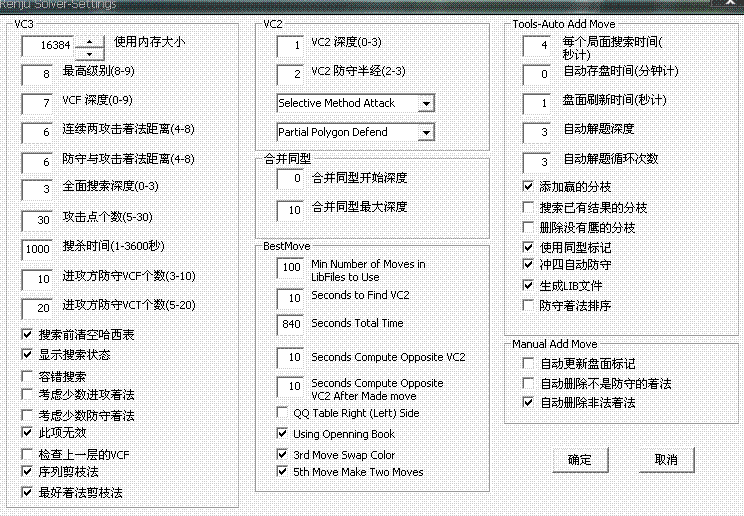
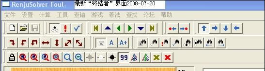
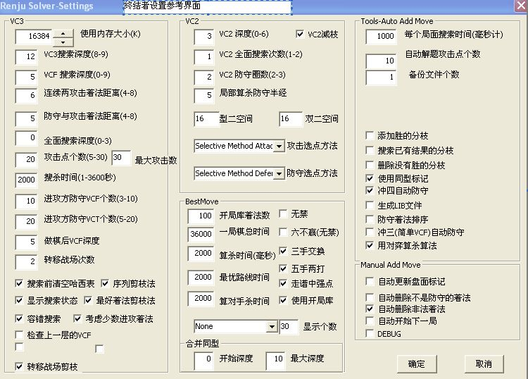

关于RenjuSlover的设置
#1 关于RenjuSlover的设置 作者：nara 发表时间：2008-3-17 12:14:53
一直有关于RenjuSlover的设置的问题,现在截个图供大家一起讨论,看看这些数据怎么设置才能使RenjuSlover发挥它的最大功效.欢迎大家热烈讨论啊!!!
#2 Re:关于RenjuSlover的设置 作者：虚无 发表时间：2008-3-17 13:44:15
 你的版本好象过时了...建议你去买个新的!
你的版本好象过时了...建议你去买个新的!
#3 Re:关于RenjuSlover的设置 作者：虚无 发表时间：2008-3-17 13:51:21
另外要说的是..无论你怎么设置~只要不是正式版...只会用最低的级别进行计算..也就是1秒算完#4 Re:关于RenjuSlover的设置 作者：nara 发表时间：2008-3-17 14:24:59
我那个截图只是本站测试版啊!哈哈!虚无,你那个截图上的设置是不是最好的设置啊?棋力跟黑石3.7比,哪个更强啊!
#5 Re:关于RenjuSlover的设置 作者：walker 发表时间：2008-3-18 2:23:26
虚无，“防守与攻击着法距离”为5的话，个别时候可能会漏算、算错。漏算不重要；关键是算错就麻烦了。
楼上，关于与黑石相比，如果你让黑石用同样的计算时间，你自己用黑石去跟挂下几盘棋自己去比较吧。
QQ3手房，(以前)人家用谱+软+人、同时对某一个局面反复下(即相当于研究了好几个小时、好几天！)、然后还要反复悔棋，最后才打败挂，然后就沾沾自喜！而挂只用15秒钟走一步(！)、(一般)不悔棋。
#6 Re:关于RenjuSlover的设置 作者：虚无 发表时间：2008-3-18 9:09:53
我没提供设置,只是看他的落后~~给点建议罢了#7 Re:关于RenjuSlover的设置 作者：nara 发表时间：2008-3-18 12:33:39
虚无,为什么不关于设置提点意见呢!大家可以讨论讨论,到底怎么设置才算最好的.谢谢.#8 Re:关于RenjuSlover的设置 作者：gerbo 发表时间：2008-3-18 15:23:02
以上的截图都不是正式版的吧?正式版的我是英文的,不知道你们是不是~~关于设置问题,很多人,基本90%多的人不会,会设置的参数也没设置那么好,例如三手里某人,但已经算相当不错的了,总比不会调强多了,但真正设置好的又有几个.这个帖子非常好,值得大家一起来探讨,限于本人愚笨,基本拿在手里没做什么用,望更多的人能提出宝贵的经验供更多的人参考学习,提高,感谢LZ~#9 Re:关于RenjuSlover的设置 作者：撒蓉儿 发表时间：2008-3-18 18:41:03
gerbo把你的正式版发上来让大家开开眼嘛!
#10 Re:关于RenjuSlover的设置 作者：gerbo 发表时间：2008-3-19 9:42:14
更正下，对我在８楼的错误澄清：刚看了下，正式版是汉字界面，不是英文的，我在８楼发表时由于仅凭记忆，造成了陈述错误．（我所记忆中的英文原来是挂的主人给的＜导入设置＞） 记心越来越不好了~!
记心越来越不好了~!
撒蓉儿~哈哈~二楼是正式版的．截图的事省了．．．我也不会截图嘛！ 对参数设置有什么建议请多多发表下意见．
对参数设置有什么建议请多多发表下意见．
#11 Re:关于RenjuSlover的设置 作者：撒蓉儿 发表时间：2008-3-19 18:14:55
虚无 把你的正式版发上来给大家共享一下吧！
把你的正式版发上来给大家共享一下吧！
#12 Re:关于RenjuSlover的设置 作者：虚无 发表时间：2008-3-21 11:23:36
呵呵#13 Re:关于RenjuSlover的设置 作者：唐海勇 发表时间：2008-3-21 16:47:21
在哪买?
#14 Re:关于RenjuSlover的设置 作者：小辉 发表时间：2008-3-21 21:06:15
这是什么啊
#15 Re:关于RenjuSlover的设置 作者：nara 发表时间：2008-3-24 14:59:46
gerbo,哈哈.你有正式版不会用啊?怎么不让卖给你的人教你设置啊.现在能不能用啊?用不了的话买了也没用啊.还有加你一点反应都没有的.晕啊#16 Re:关于RenjuSlover的设置 作者：nara 发表时间：2008-3-24 16:47:27
欢迎大家热烈讨论啊 !有什么好的意见都可以提出来啊.
!有什么好的意见都可以提出来啊.
#17 Re:关于RenjuSlover的设置 作者：战龙在野 发表时间：2008-4-1 21:49:22
解决在算杀上和黑石的核心不一样,也就是说2个软件都会失误,又各有长处#18 Re:关于RenjuSlover的设置 作者：唐海勇 发表时间：2008-4-7 14:43:57
谢谢 虚无 的提醒,到今天为止,已经完整破解,可自定每次走子时间,破解以前是默认1秒钟!#19 Re:关于RenjuSlover的设置 作者：有志青年 发表时间：2008-4-7 14:50:12
建议不要发布，还是个人使用吧。
#20 Re:Re:关于RenjuSlover的设置 作者：南京小飞机 发表时间：2008-7-20 9:47:00
引用：
原文由 有志青年 发表于 2008-4-7 14:50:12 :建议不要发布，还是个人使用吧。
#21 Re:关于RenjuSlover的设置 作者：26 发表时间：2008-7-20 12:42:55
本想发设置截图的，可是发不出来。终结者一份200元，有需要者和作者小4联系。QQ好像是285348965
#22 Re:关于RenjuSlover的设置 作者：潇洒 发表时间：2008-7-20 12:47:09
花花发的是什么？图片没打开#23 Re:关于RenjuSlover的设置 作者：潇洒 发表时间：2008-7-20 13:05:21
帮花花发图
#24 Re:关于RenjuSlover的设置 作者：潇洒 发表时间：2008-7-20 13:06:03
［ 有志青年 于 2008-7-21 6:21:11 时奖励此帖[金币加 20 威望加1］
#25 Re:关于RenjuSlover的设置 作者：二十七刀 发表时间：2008-7-21 5:19:07
这样一发,潇洒的威望值可能比我高了,晕 我为什么不抢在别人之前先发
我为什么不抢在别人之前先发
#26 Re:关于RenjuSlover的设置 作者：一人十一了 发表时间：2008-7-22 6:54:57
勾选“容错搜索”会有误杀情况出现。
勾选“自动删除非法着法”运气不好的时候会被终结者删除已终结的分支，这种情况向小四反应过。
#27 Re:关于RenjuSlover的设置 作者：wrwak 发表时间：2008-11-20 22:46:49
喜欢做棋谱的人必备啊#28 Re:关于RenjuSlover的设置 作者：巫山云雨 发表时间：2011-7-16 16:20:58
呵呵想要一个在哪里购买呀#29 Re:关于RenjuSlover的设置 作者：李珉烁 发表时间：2011-7-17 18:09:54
洒神的设置 适合快速解决战斗 不适合做谱VC3才深度12 VCF才5
我的都VC3 23 VCF10
#30 Re:关于RenjuSlover的设置 作者：李珉烁 发表时间：2011-7-17 18:13:24
防守半径5 和 6 就是一个巨大的矛盾 功能有巨大的区别 需要2套分数表
#31 Re:关于RenjuSlover的设置 作者：李珉烁 发表时间：2011-8-15 19:27:15
总之等待最新的版本ing......